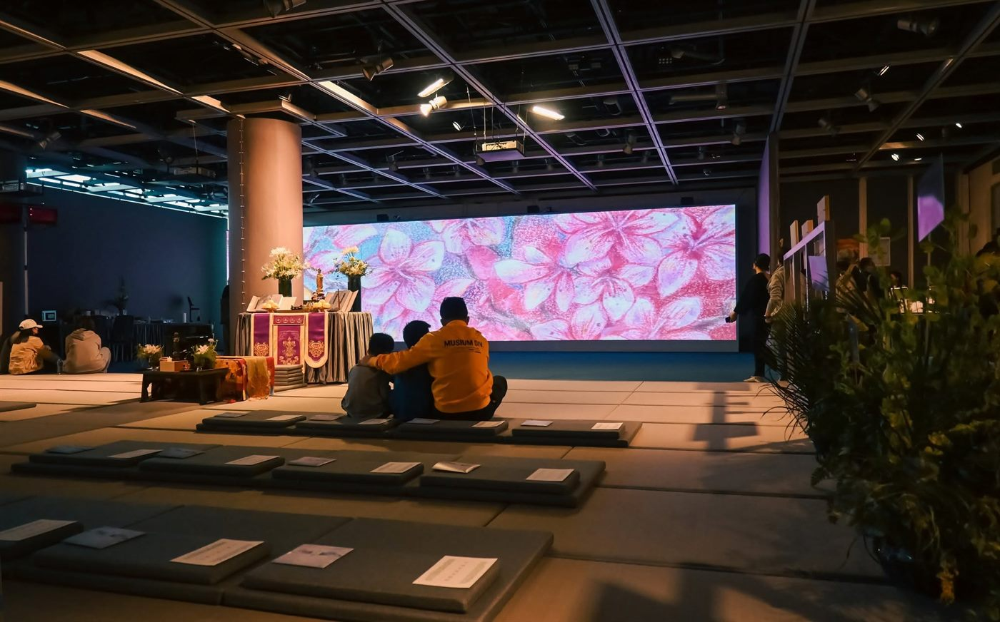
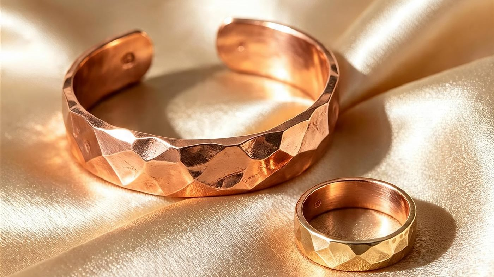
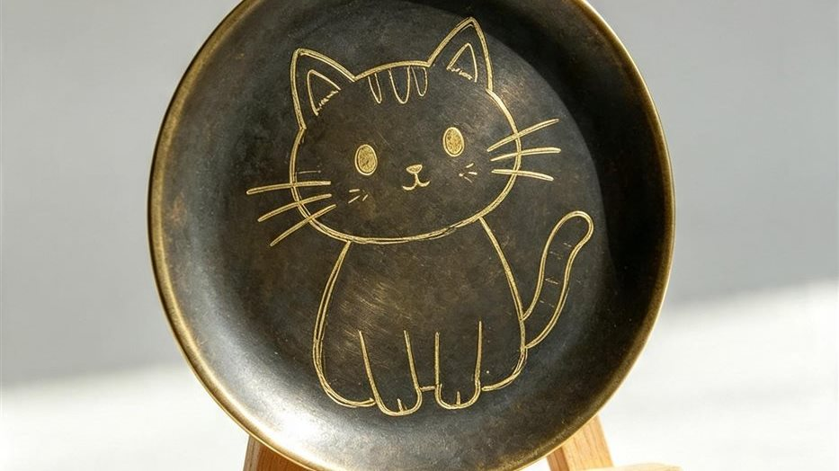
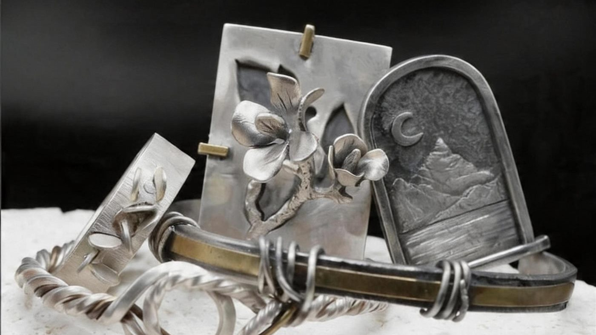
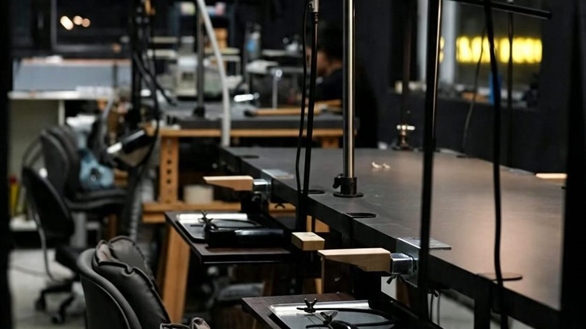

常規課程與單元工作坊
結合 STEAM 元素，靈活配合學校課外活動、彈性時間學習
Art-Tech 互動藝術課(TouchDesigner)
「不用寫代碼，用邏輯與美感操控光影」
建議人數：10 - 35 人
適合對象：中學生｜成人
每堂時長：1 - 1.5 小時
課程內容：六堂由節點入門到小型沉浸式展覽，完成自己的互動作品。

生成式 AI 影像課(ComfyUI)
「掌控 AI，學會生成式創作」
建議人數：10 - 35 人
適合對象：中學生｜成人
每堂時長：1 - 1.5 小時
課程內容：六堂由提示詞、工作流到 AI 動畫短片，完成可播放作品。

Art-Tech 互動體驗工作坊
「身體即畫筆，揮手成光痕」
建議人數：10 - 35 人
適合對象：中學生｜成人
課堂時長：1.5 小時 (單元體驗)
課程內容：零基礎、全身參與，一節課內完成自己的光繪畫面。

AI 互動體驗工作坊
「使用 Gemini 快速創作你的互動藝術」
建議人數：10 - 35 人
適合對象：中學生｜成人
課堂時長：1.5 小時 (單元體驗)
課程內容：AI 與視覺硬件聯動，把抽象概念變成可玩的互動裝置。

AI 網頁生成與互動設計課
「用 AI 當作最強工具，毋須基礎寫出專屬網頁」
建議人數：10 - 35 人
適合對象：中學生｜成人
課堂時長：1.5 - 2 小時
課程內容：一節課用 AI 寫出互動網頁，並即時部署上網分享。

AI 平面設計課
「用 AI 生成工具，快速做出專業平面設計」
建議人數：10 - 35 人
適合對象：中學生｜成人
課堂時長：1.5 - 2 小時
課程內容：由商業案例到成品，完成一套可用於宣傳的海報與圖文。
展覽策展生涯規劃系列
「走進博物館與畫展，啟發策展生涯」
建議人數：10 - 35 人
適合對象：中學生｜成人
課堂時長：1.5 小時
課程內容：分組抽卡設計展覽方案，認識 AI／Art-Tech 展覽應用。

紅銅開口戒指/手鐲 工作坊
「從一片紅銅開始，親手打造專屬首飾」
建議人數：10 - 30 人
適合對象：中學生｜成人
課堂時長：1 - 1.5 小時
課程內容：鍛敲、彎折、修磨，一節課完成專屬戒指或手鐲。

復古銅染工藝擺設
「認識金屬的化學之美，科學與藝術的結合」
建議人數：10 - 30 人
適合對象：中學生｜成人
課堂時長：1 - 1.5 小時
課程內容：安全染劑配合抗蝕繪圖，完成復古銅染擺設。

金工長期班（深入進階）
「深入金工核心技術，完成個人首飾系列」
建議人數：10 - 30 人
適合對象：中學生｜成人
課堂時長：1 - 1.5 小時
課程內容：鋸切、焊接與設計轉化，完成 3 至 5 件個人系列。

傳統錾刻錫紙畫工作坊
「在錫紙上鍛敲出立體浮雕畫」
建議人數：10 - 30 人
適合對象：中學生｜成人
課堂時長：1 - 1.5 小時
課程內容：以正反按壓技法做出浮雕，完成裝框作品。
非遺金箔書法拓印工作坊
「親身體驗貼金工藝，顯現書法之美」
建議人數：10 - 30 人
適合對象：中學生｜成人
課堂時長：1 - 1.5 小時
課程內容：鋪箔、掃金顯圖，完成一幅金箔書法拓印。
非遺螺鈿手鏈工作坊
「以幻彩貝殼拼貼出精美手鏈」
建議人數：10 - 30 人
適合對象：中學生｜成人
課堂時長：1 - 1.5 小時
課程內容：挑選貝殼片拼貼、封層，完成一條螺鈿手鏈。
生涯規劃與職涯探索系列
「走進珠寶行業，啟發生涯規劃」
建議人數：10 - 30 人
適合對象：中學生｜成人
課堂時長：1 - 1.5 小時
課程內容：實地參訪珠寶品牌、與業界交流，了解入行條件。

此分類課程籌備中
如有興趣，歡迎 聯絡我們 查詢最新課程安排